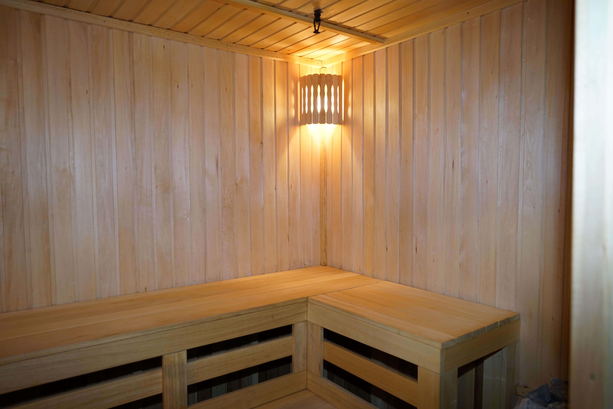
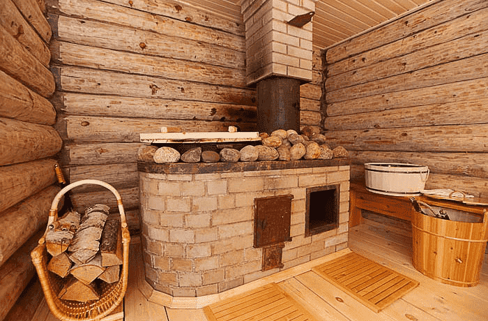
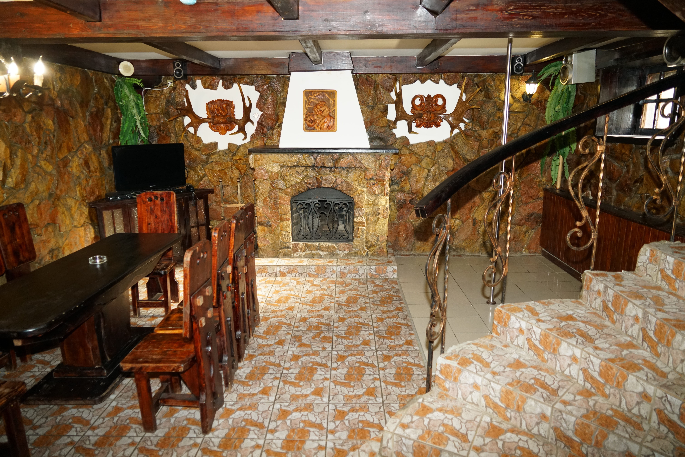

История бани началась ещё в глубокой древности, причём у всех народов баня была не только местом для
мытья, а также особенным, почти священным местом. Считалось, что баня объединяет 4 главные природные
стихии: огонь, воду, воздух и землю. Поэтому человек, посетивший баню, как бы вбирал в себя силу всех
этих стихий и становился крепче, сильнее и здоровее. Недаром на Руси бытовала поговорка «Помылся – будто
заново родился!».

Бани всегда пользовались особым почётом на территории России. На Руси с баней были связаны все самые
важные
события: рождение, свадьба, выздоровление после тяжёлой болезни. Так, была такая традиция: обязательно
необходимо было посетить баню перед венчанием и на следующий день после свадьбы. Наши предки полагали,
что
предназначение бани состоит не столько в очищении тела, сколько в очищении души. Считалось даже, что
если
больному не помогла баня, то ему уже ничто не поможет.
Парную баню на Руси называли мыльней, мовней или влазней. По данным историков (история русской бани),
ещё в
5-6 веке на Руси были в ходу такие бани, причём ими пользовались как богатые, знатные люди, так и
простой
люд. Поэтому несправедливо считать русский народ нецивилизованным, отсталым и не имеющим никакого
представления о личной гигиене. Русская баня – одна из самых древних, она появилась почти одновременно с
самим возникновением славян. О бане упоминается в устном народном творчестве ещё тогда, когда даже не
было
письменности. Возможно, славяне придавали такое большое значение бане, поскольку в то время они были
язычниками и привлекали в бане благосклонность таких важных стихий, как вода и огонь. Так или иначе, но
бани
всегда играли огромную роль в жизни русского народа.
Представить Россию без бань трудно. Даже в наши дни, когда распространилась мода на сауны, почти в каждом
деревенском дворе или дачном участке есть русская баня, где можно поддать крепкого парку и от души
похлестать себя ароматным веничком.

Стоит отметить, что многие иностранцы в России приживались, становясь по своим привычкам
практически
русскими. Естественно, что они привыкали и к русской бане. К XIX веку в крупных городах
появились
дорогие, богато обставленные бани с хорошей обслугой и прекрасными буфетами. Они быстро
превратились
в своеобразные клубы для людей состоятельных. В Москве такой баней-клубом стали знаменитые
Сандуны,
где бывал весь цвет российского дворянства и куда с удовольствием стали ходить иностранцы.
Интересно, что иностранцы, долго жившие в России, стали по возвращении на родину стоить у себя
бани, чем немало изумляли соотечественников.

Особенно быстро русская баня «завоевала» Германию. «Но мы, немцы, – писал немецкий врач Макс Плотен – пользуясь этим целебным средством, никогда даже не
упоминаем ее названия, редко вспоминаем, что этим шагом вперед в культурном развитии обязаны
нашему восточному соседу». Бани стали появляться и в других странах, а португалец Антонио Саншес даже
издал книгу «Уважительные сочинения о русских банях».
В Европе любят рассуждать о загадочной русской душе и вспоминать великих писателей, философов, танцоров,
поэтов, ученых, которых Россия дала миру. Но иногда забывают, что элементарному мытью просвещенную
Европу тоже учила Россия.